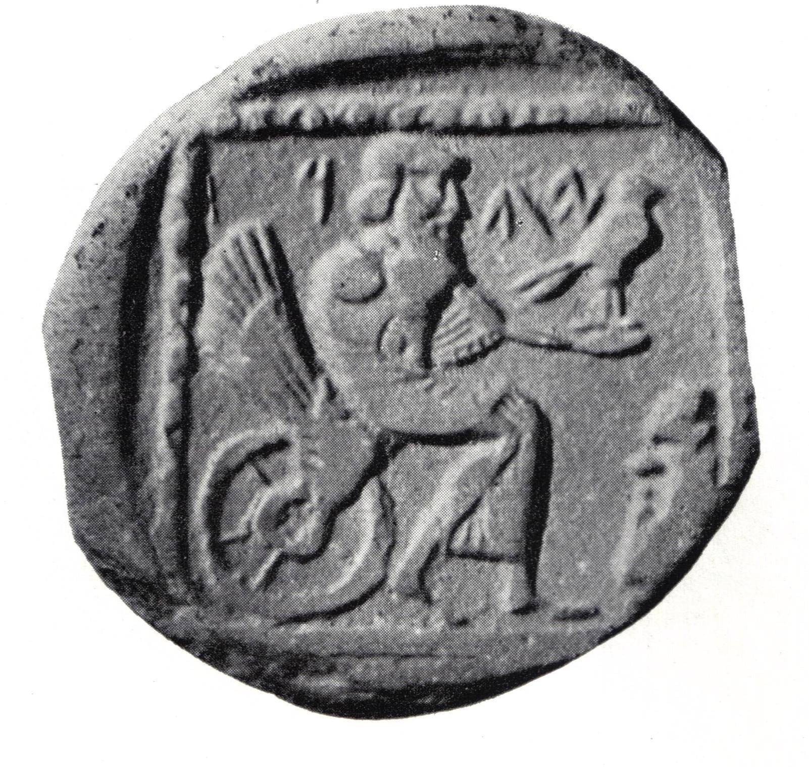

Yehud Silver Coins

- Find Name
- Yehud Silver Coins
- Description
- Small silver coins of the Achaemenid Persian province of Yehud, the former kingdom of Judah, bearing the Aramaic inscription YHD (or Hebrew YHDH). Minting began around 350 BC (some scholars argue for the early 4th century BC) and continued into the Ptolemaic period; the earliest issues were struck at a Philistian mint near Gaza and later ones in or near Jerusalem. Types include a lily (a symbol of Jerusalem), a falcon or eagle, Athenian owl imitations, and named issues of Hezekiah the governor and Yochanan the priest. The common denomination weighs about 0.58 g (a ma'ah or gerah), with halves of about 0.29 g. The class was first identified by Eleazar Sukenik in 1934.
- Historical Period
- Persian Period (539-332 BC)
- Evidence Class
- Direct
- Interpretations
- These coins directly name the province the Bible calls Yehud in Ezra and Nehemiah, and they are the earliest Jewish coinage, struck while Jerusalem was rebuilding under Persian rule. Their tiny size and the mix of Persian, Greek, and local designs show a small province balancing imperial loyalty with its own identity. The famous 'God on the Winged Wheel' drachm is sometimes read YHW (the divine name) and sometimes YHD (the province); the YHD reading is now widely accepted, but the debate should be noted.
- Alternative Names
- Yehud Coinage;YHD Coins
- Related Places
- Related Books
- Related Events
- Related People
- Scripture Illuminated
- Biblical Significance
- Ezra 2:1 describes the exiles returning 'every one unto his city' in the province of Yehud; these coins, stamped YHD, are the province's own money from the generations that followed that return.
- Artifact Date
- c. 350 BC onward (early 4th century BC to the Ptolemaic period)
- Current Location
- Israel Museum, Jerusalem; British Museum, London (examples)
- Date Discovered
- First identified 1934
- Discovery Location
- Jerusalem area and Philistian coast (Gaza area)
- Timeline Era
- Return and Second Temple
Awaiting Review Not yet checked against scholarly sources. Treat its claims as provisional until this entry is reviewed. About verification
Sources: https://en.wikipedia.org/wiki/Yehud_coinage
https://www.biblical-coins.com/yehud-yhd-athena-owl-silver-gerah-maah/
https://www.biblical-coins.com/yehud-yhd-athena-owl-silver-gerah-maah/
Last reviewed: not yet reviewed